Voyager：面向 DNN 加速器设计空间探索与生成的端到端框架
论文针对 DNN 加速器手工设计耗时、难以跨设计点扩展，以及已有生成器参数化有限、难以产出 tapeout-ready 设计、缺乏端到端编译器的问题，提出基于 HLS 的端到端框架 Voyager。该方法通过 C++ 模板元编程实现加速器模板（weight-stationary systolic array 矩阵单元 + 可编程向量单元）的编译期特化，覆盖数据类型（integer/浮点/posit/自定义格式）与量化方案（含 microscaling），配合 PyTorch 编译器完成量化、算子融合与基于扩展 Interstellar 的调度搜索，并用 HLS 编码风格优化改善时序与面积。基于 Catapult HLS、Synopsys VCS 与 Design Compiler 的评估显示：生成设计 MAC 利用率最高 99.8%，对比 Gemmini/NVDLA 在 iso-hardware 下 runtime 最高降 61%、面积最高降 56%，对比手工优化设计最高快 48%；编码风格优化将最大频率从 400MHz 提升至 1GHz。对团队而言，其价值在于参数化可综合 RTL 生成与 workload-driven DSE 方法学借鉴，而非直接的验证技术。
设计高效 DNN 加速器是耗时且劳动密集的工程过程，难以随模型快速演进跨多个设计点扩展。已有加速器生成器存在四方面不足：缺乏全面的设计空间探索支持、无法产出 tapeout-ready 系统、对 microscaling 等量化方案支持不足、缺乏将高层 DNN 模型映射到生成硬件的健壮编译器。
Voyager 是基于 HLS 的端到端框架：(1) 以 C++ 模板、变参模板与偏特化实现加速器模板的编译期特化，参数覆盖 systolic array 规模、buffer 大小、访存带宽、数据类型（integer/浮点/posit/用户自定义如 NormalFloat4）与量化方案（per-tensor/per-channel/microscaling，在矩阵单元内插入 dequantization 逻辑）；(2) 硬件模板含 weight-stationary 脉动阵列矩阵单元（三缓冲权重寄存器、可编程 address generator、L1/L2 循环控制）、多级可编程向量单元（free-knot spline 多项式逼近非线性函数）与用户自定义扩展块（如 DWC 单元），并可经 Chipyard 以 TileLink 集成到 RISC-V SoC；(3) HLS 编码风格优化（常量外提、扁平化循环控制）改善时序、面积与 HLS 运行时间；(4) 基于 PyTorch 2 Export 的编译器完成量化（作者称首个支持完全可配置 block size 与数据类型的 microscaling 编译器）、量化/算子/reshape 融合，并扩展 Interstellar 加入硬件可行性约束与细粒度性能模型（区分 L1 计算时间与访存时间、考虑权重双缓冲与向量单元反压）进行调度搜索，最终生成矩阵/向量单元指令。评估流程为 Catapult HLS 生成 RTL Verilog、Synopsys VCS 周期精确仿真、Design Compiler 逻辑综合。
生成设计在多模型、多规模下 MAC 利用率最高达 99.8%，runtime 随阵列规模近线性下降
对比 Gemmini（Intel 16）与 NVDLA（TSMC 16）iso-hardware 配置：对 Gemmini 面积高 28% 但 runtime 低 61%；对 NVDLA 面积小 35.91%–56.48%、runtime 低 20.84%–53.15%；总体最高 56% 更低面积、61% 更低 runtime
对比手工优化设计：对 Simba（TSMC 16nm）ResNet-50 latency 为 4.4M vs 8.3M cycles、利用率 95% vs 48%、绝对 runtime 好 5%；对 VSQ（因无法获得 5nm 改用 TSMC 7nm）BERT-Base runtime 13.4ms vs 11.4ms，但 VSQ 未加速整个模型；总体最高 48% 性能提升
HLS 编码风格优化使最大频率从 400MHz 提升至 1GHz（面积 1.16→1.41 mm²），归一化到 400MHz 后面积仅增加 1.7%
MXINT8（microscaling）推理精度与 FP32 差距在 1% 以内，面积比低精度浮点格式最高低 23%；相对 INT8 寻址与控制部分面积多 43%，但整体面积低 5.64%、比 E4M3 低 11.6%（32×32 设计，TSMC 16nm @ 1GHz）
算子融合改善 runtime 12.66%；细粒度性能模型较粗粒度模型最高降低 2.9% runtime；双缓冲 accumulation buffer 降低 3% runtime
相比 Gemmini、NVDLA、MAGNet、MAERI 等生成器：数据类型与量化方案覆盖更广（任意位宽 FP/integer/posit、用户自定义类型、microscaling），可产出 tapeout-ready 设计，并内置 PyTorch 编译器实现自动量化/融合/调度，免除手工模型映射；相比 Interstellar、Timeloop、MAESTRO、ZigZag 等纯分析建模工具，Voyager 实际生成硬件，并用考虑权重双缓冲、向量单元反压等硬件效应的细粒度性能模型指导调度。据作者所述，其编译器是首个支持完全可配置 block size 与数据类型的 microscaling 的编译器。
相关度级别：medium
命中能力域：2.1 IP 架构与微架构 | 2.2 RTL 设计与实现
理由：上游 catalog 标注的 2.5（形式验证）与 2.7（验证自动化/AI 辅助）与论文实际内容不符：全文没有任何 formal property checking、model checking、LEC/SEC 或协议形式化建模内容，其自动化是设计侧（HLS 生成器 + DNN 编译器）而非验证流程自动化，也未使用 LLM/AI 辅助技术。按团队能力域重新判断，论文实际命中 2.1 与 2.2：其 workload-driven 设计空间探索（解析性能模型 + 全数据集精度评估 + 综合回标面积）与面向 PPA 的架构参数权衡对应 2.1 的核心方法；其可综合 RTL 生成、HLS 编码风格对时序收敛（400MHz→1GHz）与面积的影响、Design Compiler 逻辑综合评估对应 2.2 的核心技术。但论文对象是 DNN 加速器而非内存/互连 IP，且完全不涉及团队占比很重的验证工作（UVM/formal/emulation），方法需移植改造才能落地，故评级为 medium 而非 high。
建议动作：作为方法参考存档
arXiv:2509.15205v1 [cs.AR] 2025年9月18日
Kartik Prabhu
斯坦福大学，美国斯坦福
kprabhu7@stanford.edu
Zhouhua Xie 斯坦福大学，美国斯坦福
Jeffrey Yu 斯坦福大学，美国斯坦福
jeffreyy@stanford.edu
Abigail Aleshire 斯坦福大学，美国斯坦福
xzh015@stanford.edu abbya@stanford.edu
Ammar Ali Ratnani
斯坦福大学
美国斯坦福
Xinyuan Allen Pan 斯坦福大学，美国斯坦福
allpan@stanford.edu
Zihan Chen 斯坦福大学，美国斯坦福
zihan410@stanford.edu
Priyanka Raina 斯坦福大学，美国斯坦福
aratnani@stanford.edu praina@stanford.edu
面积降低56%。与手工优化的加速器相比，Voyager 实现了相当的性能，同时在设计与工作负载映射方面提供了更高的自动化程度。
深度神经网络（DNN）在众多领域取得了巨大成功，但需要大量的计算与存储资源。尽管已有许多 DNN 加速器被提出以应对这些挑战，但设计高效的加速器是一个工程密集型的过程。随着神经网络模型的快速演进，为每种新型模型开发定制加速器正变得越来越不切实际。
为解决这一问题，已有若干 DNN 加速器生成器 [4, 13, 15] 被提出。虽然这些框架有助于硬件生成的自动化，但它们通常在四个关键方面存在不足：（1）缺乏对全面设计空间探索的支持；（2）无法生成可流片（tapeout-ready）的系统；（3）缺乏对量化方案（如 microscaling）的支持；（4）缺乏能够将高层 DNN 模型映射到所生成加速器的健壮编译器。
在本文中，我们提出了 Voyager，一个基于高层综合（HLS）的端到端框架，用于神经网络加速器的设计空间探索与生成。如图 1 所示，给定数据类型、缩放因子类型与粒度、计算并行化以及缓冲区大小等架构参数，我们的框架能够生成高性能、可流片的寄存器传输级（RTL）加速器实现。该框架还包含一个协同设计的编译器，可将 PyTorch 模型高效地映射到所生成的硬件上。
本文的主要贡献如下：
尽管深度神经网络（DNN）在从计算机视觉到自然语言处理等众多领域取得了最先进的性能，但要高效运行这些计算需求极高的模型，仍需要专用的硬件加速器。然而，设计这类加速器是一个耗时且劳动密集的过程，难以在多个设计点之间良好扩展。虽然先前的工作已尝试实现 DNN 加速器生成的自动化，但它们通常参数化能力有限，无法生成高性能、可流片的设计，对多种数据类型和量化方案的支持有限，并且缺乏集成的端到端软件编译器。
本工作提出了 Voyager，一个基于高层综合（HLS）的框架，用于快速进行 DNN 加速器的设计空间探索与生成。Voyager 通过在工艺节点、时钟频率和规模等方面提供广泛的可配置性，克服了先前工作的局限，其可定制参数包括处理单元数量、片上缓冲区大小和外部存储器带宽等。与先前工作相比，Voyager 支持更加丰富多样的数据类型和量化方案，既包括内建的任意长度浮点、posit 和整数格式，也包括带有逐张量缩放和微缩放（microscaling）量化的用户自定义定制格式。Voyager 基于 PyTorch 的编译器可将神经网络端到端地高效映射到所生成的硬件上，并支持量化、算子融合和分块（tiling）。
我们在最先进的视觉和语言模型上对 Voyager 进行了评估。Voyager 能够针对不同的数据类型和量化方案实现快速的设计空间探索，并进行全数据集的精度评估。所生成的设计在各种模型和规模下均达到了很高的利用率，最高可达 99.8%，并且在给定的机器学习模型、工艺节点和性能约束条件下，相比先前的生成器，延迟最多降低 61%。该设计空间探索工具支持具有不同处理单元数量、片上缓冲区大小和片外存储器带宽的加速器，并生成具有高度可配置数据流的设计，支持可编程的循环分块、排序、展开和融合。
1
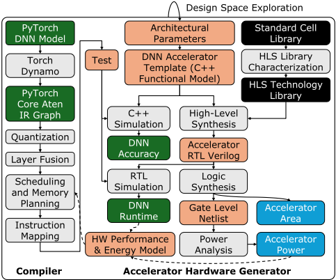
编译器支持量化、硬件感知的算子融合，并且我们与 Interstellar [19] 的扩展版本集成，以找到神经网络在加速器上的最优调度（循环分块、排序、展开和融合）。
我们通过生成能够高效执行图像分类、语言理解与生成等多种模型的加速器来评估 Voyager。结果表明，微缩放整数（microscaled integers）实现的推理精度与 32 位浮点数相差在 1% 以内，但面积最多比低精度浮点格式低 23%。在相同硬件配置下，与 Gemmini 和 NVDLA 等先前的生成器相比，Voyager 生成的设计面积最多降低 56%，运行时间最多降低 61%。与手工优化的加速器相比，我们实现了最多 48% 的性能提升，同时提供了更强的设计自动化。
探索深度神经网络（DNN）加速器的设计空间一直是多项先前工作的重点，这些工作依赖于体系结构建模。Interstellar [19]、Timeloop [11]、MAESTRO [8] 和 ZigZag [10] 等工具通过生成映射并使用解析成本模型对其进行评估来计算工作负载成本。Interstellar [19] 使用粗粒度的访存与计算能耗模型来估计能耗，并利用启发式方法对搜索空间进行剪枝。Timeloop [11] 采用类似的方法，但支持穷举搜索或随机采样搜索。MAESTRO [8] 专注于针对固定数据流的调度搜索。ZigZag [10] 对这些工作进行了扩展，在体系结构模板方面提供了更大的灵活性，并扩大了有效映射的空间。尽管这些工具对设计空间探索很有用，但它们并不生成硬件。
除建模之外，还有若干工作为 DNN 加速器生成可综合硬件，包括 Tandem Processor [5]、DNNBuilder [20]、MAERI [9]、NVDLA [13]、MAGNet [15] 和 Gemmini [4]。这些工作在体系结构、可配置性和软件支持方面各不相同。
Tandem Processor [5] 面向非通用矩阵乘（GEMM）操作，与 GEMM 单元结合时可实现 DNN 模型的端到端执行。它采用软件管理的暂存存储器（scratchpad）和自定义指令集体系结构（ISA），以避免传统处理器中地址计算和循环控制带来的开销。一个自定义编译器将 ONNX 计算图下沉到该 ISA。
DNNBuilder [20] 为现场可编程门阵列（FPGA）生成采用流水线体系结构的设计，将每个流水线级映射到一个神经网络层。该设计被固定于单一模型，这与包括 Voyager 在内的其他生成器不同，后者生成的加速器更为通用，能够支持多个 DNN 模型。
MAERI [9] 构建具有灵活互连结构的加速器。该体系结构由通过树状互连连接的乘加（MAC）单元组成，这种互连支持广泛的数据流。MAERI 可以生成各种规模的设计，MAC 单元数量和静态随机存取存储器（SRAM）容量均可配置。然而，它缺乏强大的软件栈。
2
| Feature | Tandem [5] | Builder [20] | MAERI [9] | NVDLA [13] | MAGNet [15] | Gemmini [4] | Voyager |
|---|---|---|---|---|---|---|---|
| Datatypes | Unspecified | Unspecified | Unspecified | Int/Float | Int | Int/Float | Int/Float/ Posit/Custom |
| Multi-Precision | ✗ | ✗ | ✗ | ✗ | ✗ | ✗ | ✓ |
| Microscaling | ✗ | ✗ | ✗ | ✗ | ✗ | ✗ | ✓ |
| Abstraction | RTL Verilog | RTL | RTL Verilog | RTL Verilog | HLS C++ | RTL Chisel | HLS C++ |
| SW Support | ONNX | Custom | Custom | Caffe | Custom | ONNX/C | PyTorch |
| SoC Integration | ✗ | ✗ | ✗ | ✗ | ✗ | ✓ | ✓ |
| Feature | Tandem [5] | Builder [20] | MAERI [9] | NVDLA [13] | MAGNet [15] | Gemmini [4] | Voyager |
NVDLA [13] 通过用于卷积、激活函数、池化、归一化和重塑的专用模块，支持广泛的 DNN 操作。它在数据类型、MAC 阵列规模、存储器接口宽度和缓冲区大小方面提供可配置性。每个专用模块都可以独立设定规模，并可被选择性地包含或排除。其软件栈将 Caffe 模型编译为硬件指令。
MAGNet [15] 采用基于高层次综合（HLS）模板的方法，由连接到全局缓冲区的处理单元（PE）阵列组成。每个 PE 集成了向量 MAC 单元、本地缓冲区以及用于 ReLU、池化、缩放和量化的后处理单元。它可在多个维度上进行配置，包括 PE 数量、缓冲区大小、向量通道数、向量宽度和整数精度。然而，MAGNet 缺乏软件栈，并且需要对神经网络层进行手动映射。
Gemmini [4] 是一个基于 Chisel 的设计生成器，其生成的设计包含处理单元（PE）、暂存（scratchpad）存储器和累加器存储器，以及用于池化和激活函数的附加单元。Gemmini 既可以生成脉动阵列，也可以生成向量引擎，并可在阵列规模、缓冲区大小以及是否包含 im2col、池化或转置单元等可选模块方面进行配置。Gemmini 还同时支持任意精度的整数和浮点数据类型。其软件栈采用 ONNX 格式作为模型规范。
与上述工作不同，Voyager 生成的加速器能够以远为更高的灵活性对神经网络进行端到端加速。Voyager 支持一系列新兴数据类型，以及诸如微缩放（microscaling）等先进的量化策略，这些对于 8 位以下精度而言日益关键。先前的生成器还缺乏健壮的软件栈，需要人工将模型转换为自定义格式才能将其映射到硬件。相比之下，Voyager 基于 PyTorch 的编译器可实现自动量化、融合与调度，只需极少的人工投入即可在生成的加速器上高效执行。
Voyager 基于一个灵活的加速器模板生成硬件实例，如图 2 所示。该模板包含一个用于卷积和通用矩阵乘法
（GEMM）的矩阵单元，以及一个用于非 GEMM 运算的可编程向量单元。两个单元均拥有自定义指令集。
矩阵单元由一个权重固定的脉动阵列组成，其中每个处理单元（PE）执行乘累加（MAC）操作。输入通道沿垂直方向展开，输出通道沿水平方向展开。输入激活值从左向右流动，而部分和自上而下传播。权重被预加载到各 PE 中，并在一个分块的整个计算过程中保持固定。
为了保持高利用率并避免权重加载造成的停顿，每个 PE 配有三缓冲寄存器，这些寄存器通过列方向的移位寄存器链相互连接。当一个分块正在被处理时，下一个分块的权重可以并发地移入，从而实现分块级流水线。离开阵列的部分和可选择地与偏置项相结合，并写入专用的累加缓冲区。
矩阵单元通过可编程地址生成器支持运行时可配置的数据流，这些地址生成器从主存储器中取回输入和权重的分块，并将其存入独立的双缓冲区，使存储器访问与计算重叠以获得更高的吞吐量。这些地址生成器在 L1 和 L2 两个存储层级上对循环顺序和循环边界具有细粒度的控制。此外，输入控制器和权重控制器通过寄存器缓冲区支持原位转置和重排操作，从而实现转置与 GEMM 操作的融合。
宽度为 𝑁 的多级向量单元执行非线性激活函数（如 ReLU、GeLU）、逐元素操作（如残差加法）、softmax 和层归一化等复杂函数，以及量化/反量化。它包含一个多级操作流水线、一个用于求和与最大值归约的归约单元，以及一个累加器。此外，该单元还包含三个可访问主存储器的独立地址生成器。
为了最小化存储器访问，矩阵单元的输出直接馈入向量单元，从而实现矩阵操作与向量操作的融合。然而，这种紧耦合在向量单元因存储器访问而成为瓶颈并施加反压时，可能导致矩阵单元停顿。为缓解这一问题，Voyager 可以生成带有双缓冲累加缓冲区的设计：矩阵单元的输出改为存入该缓冲区，向量单元独立地从其中读取，与此同时矩阵单元处理下一个分块。
3
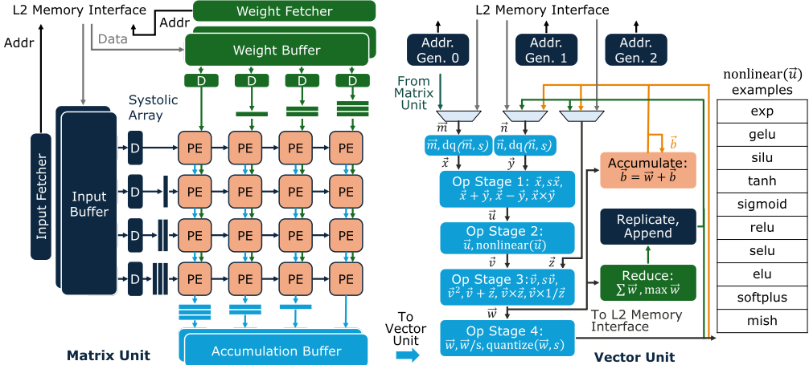
在如图 2 右侧所示的操作流水线中，每一级执行一个逐元素操作，或者原样转发数据。为了给每一级选择操作，我们首先构建深度神经网络（DNN）中常用核心操作（如层归一化和 softmax）的数据流图。通过合并多个数据流图，我们构建出一个完整的流水线，在不影响延迟的前提下最大化算术运算符的复用。向量流水线的输出可以被路由到存储器、累加器或归约单元。累加器和归约器的输出可以作为后续操作的操作数反馈回流水线，或者写出到存储器。
非线性函数通过一个可配置的多项式逼近模块来支持。我们没有为每个函数使用查找表或固定的多项式电路，而是构建了一个单一的可编程单元。在编译时，模型中的每个非线性函数都用由七个二次段构成的自由节点样条（freeknot spline）来逼近。段的边界和系数被编码到指令中。在运行时，该单元根据输入选择相应的段并计算多项式，从而为非线性运算提供精确且硬件高效的支持。
为了说明向量单元的工作方式，图 3 展示了 softmax 如何在三次遍历中完成映射。首先，张量从存储器流式送入归约单元，以计算归约维度上的最大值，然后写回存储器。接着，从存储器中读出原始张量和最大值。每个元素通过减去最大值进行平移，再进行指数运算，并进行归约以计算归一化分母，该分母被写回存储器。最后，从存储器中读出原始张量、最大值与和值，向量流水线执行减最大值、指数运算以及除以和值的操作，得到最终的概率并写入存储器。
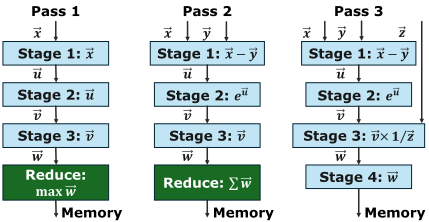
Voyager 支持用户自定义的计算块，以针对矩阵单元或向量单元无法高效处理的运算对加速器进行专门化。例如，深度卷积（DWC）相比标准卷积的数据复用有限，使得基于脉动阵列的加速效果不佳。为解决这一问题，用户可以集成一个专用的 DWC 单元，如图 4 所示。该模块由输入与权重取数单元、输入行缓冲器以及可配置数量的 MAC 树组成，每个 MAC 树均设计用于对一个 3 × 3 滤波器进行归约。对于更大的滤波器尺寸，编译器通过切片和填充将其分解为多个 3 × 3 滤波器，最终的累加在向量单元中完成。这使得硬件能够针对在大多数模型中占主导地位的 3 × 3 滤波器保持优化，同时依靠编译器来支持其他尺寸。
4
通过支持此类扩展，Voyager 将专用模块与其基线架构无缝集成，拓宽了其能够高效加速的工作负载范围。
Voyager 生成的加速器可以使用 Chipyard [1] 框架集成到片上系统（SoC）平台中，如图 5 所示。Chipyard 为构建 RISC-V SoC 提供了完整的基础设施，例如处理器核心、基于 TileLink 的互连生成器、存储器子系统和外设设备。
我们利用 Chipyard 对定制加速器的支持，将 Voyager 生成的设计集成为内存映射 I/O 外设。主机 CPU 通过内存映射控制寄存器与加速器通信，这些寄存器用于配置矩阵单元和向量单元上的操作。在存储器访问方面，加速器使用专用的轻量级 TileLink 端口连接到系统总线，从而能够无缝访问片上 L2 存储器和片外 DRAM。
这一集成表明，Voyager 生成的设计不仅可以作为独立加速器有效工作，还与最先进的 SoC 开发流程兼容，同时支持独立评估和全系统评估。
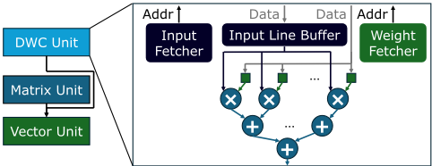
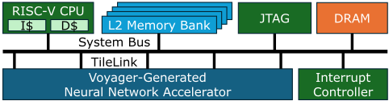
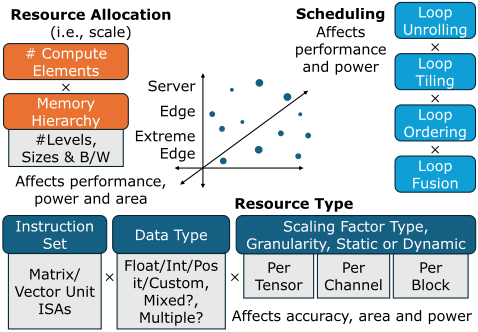
The Voyager generator exposes a large design space to the users, enabling them to generate designs that vary across three axes (Figure 6): resource allocation, resource type, and scheduling. Each axis captures a different aspect of the hardware (and software) design space and exposes tunable parameters that influence performance, power, area, and accuracy. To support this high degree of flexibility without sacrificing hardware efficiency, Voyager makes use of C++ metaprogramming features. Since HLS tools operate exclusively at compile-time, Voyager only utilizes the C++ features that enable compile-time specialization, particularly templates.
Voyager 可以通过配置计算单元的数量和存储器资源来生成不同规模的设计。例如，脉动阵列（systolic array）的维度可以配置以匹配目标工作负载的计算需求，而输入、权重和累加缓冲器的大小则可以独立调整。到主存储器的存储器带宽同样是可配置的。这些参数直接影响性能、面积和功耗，并根据诸如延迟目标或能耗预算等约束条件进行选择。更大的脉动阵列可以降低延迟，但会带来更高的面积和功耗开销。更大的片上缓冲器能够实现更高的数据复用并减少主存储器访问，但会增加缓冲器访问能耗和面积 [19]。这些权衡在设计空间探索中起着关键作用，必须仔细平衡以满足系统级目标和约束条件。
Voyager 能够生成支持多种数据类型和量化方案的加速器，从而使用户能够
5
1 template < typename InputType, typename WeightType, 2 typename PsumType> 3 SC_MODULE(ProcessingElement) { 4 ... 5 void compute(InputType input, WeightType weight, PsumType& psum){ 6 psum = input.mac(weight, psum); 7 }}; 8 SC_MODULE(SystolicArray){ 9 ... 10 ProcessingElement<int8, int8, int32> pe[16][16]; 11 };
生成针对特定类别工作负载量身定制的加速器变体。例如，用户可以生成标准的 BFloat16 加速器、采用逐通道缩放的 INT8 加速器，或采用微缩放的 FP6 加速器。
数据类型参数化。Voyager 通过 C++ 模板实现硬件数据类型参数化。C++ 中的模板支持泛型编程，使开发者能够定义以类型为参数的函数和类。在编译期间，编译器执行类型替换，用具体类型生成这些泛型函数和类的特化版本。
如代码清单 1 所示，ProcessingElement 模块是脉动阵列的计算单元，对三个操作数执行乘加（MAC）操作。该模块以三种数据类型作为模板参数：InputType 对应输入，WeightType 对应权重，PsumType 对应部分和。随后，SystolicArray 模块实例化一个由多个 ProcessingElement 组成的阵列，并为输入、权重和部分和指定具体类型。
Voyager 默认提供三种数据类型族：整数、浮点数和 posit [6]，每种类型都根据其自身的语义实现相应的算术和逻辑功能。这些类还以配置参数为模板参数，例如位宽、指数大小或符号性（代码清单 2）。每种类型都实现了 mac 函数，从而在编译期间通过 C++ 模板实现无缝的类型替换。
除内置类型外，Voyager 还通过用户自定义数据类型支持可扩展性。要添加新类型，用户只需定义一个实现预期接口的类，该接口包括 mac 函数以及其他算术和逻辑运算。这一机制足够灵活，能够支持诸如向量化处理单元（PE）（代码清单 3）以及基于码本的 NormalFloat4 [3]（代码清单 4）等非常规格式在内的各种配置。
Voyager 还支持多精度设计，即硬件可以在运行时选择的不同数据类型上进行运算。例如，模型中的某些层对量化误差更为敏感，可能需要
1 template < int Width, bool Signed> 2 class Int { 3 ac_int<Width, Signed> value; 4 Int mac(Int weight, Int psum) { 5 return value * weight.value + psum.value; 6 } 7 }; 8 template < int MantissaBits, int ExponentBits> 9 class FP { 10 ac_std_float<MantissaBits, ExponentBits> 11 FP mac(FP weight, FP psum) { 12 return value.fma(weight, psum); 13 } 14 }; 15 template < int Width, int EsBits> 16 class Posit { 17 ac_int<Width, false > bits; 18 Posit mac(Posit weight, Posit psum) { 19 ... 20 } 21
higher precision, while others can tolerate lower precision to improve efficiency.
To enable this flexibility, Voyager uses variadic C++ templates and partial template specialization to generate hardware modules that can seamlessly support multiple datatypes within the same design. For example, the InputController fetches tiles of inputs from L2 memory. In order to support
6
1 template < typename InputTypes> 2 struct InputController; 3 4 template < typename ... InputTypes> 5 struct InputController<std::tuple<InputTypes ...>>{...}; 6 7 // InputController instantiated with a single type 8 InputController<std::tuple<FP8>> inputController; 9 // or multiple types 10 InputController<std::tuple<FP16,FP8,FP4>> inputController;
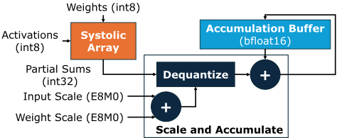
fetching multiple datatypes, this module is instantiated with tuples of supported types, as shown in Listing 5. This approach generates datatype-specific fetch logic that can be selectively used at run-time. The compiler encodes the precision required for each layer into the instruction, enabling the hardware to flexibly support multiple precisions.
Quantization Scheme Parameterization. To support a wide range of accuracy-efficiency tradeoffs, Voyager can generate accelerators with various quantization schemes, including per-tensor and per-channel quantization. To support these schemes, Voyager-generated accelerators consist of a quantization stage at the output of the vector unit as well as dequantization hardware within the vector unit's fetcher, allowing for fusion of quantization and dequantization with the previous operation.
Voyager can also generate accelerators that support microscaling [12], a quantization scheme that applies blockwise scaling along the reduction dimension to improve accuracy in low-precision GEMM operations. Supporting this scheme requires specialized hardware to both efficiently perform the GEMM operation and to generate scaling factors per output block. As shown in Figure 7, Voyager inserts additional dequantization logic within the matrix unit. Inputs and weights are stored in a low-precision integer format, such as
// 用于 HLS 的次优 C++ 编码风格 for ( int ic = 0; ic < IC_loop_bound; ic++){ for ( int oy = 0; oy < OY_loop_bound; oy++){ for ( int ox = 0; ox < OX_loop_bound; ox++){ int address = oy * OX_loop_bound * IC_loop_bound + ox * IC_loop_bound + ic; ... } } } // 可获得更优结果的编码风格 int IC_last = IC_loop_bound - 1; int OY_last = OY_loop_bound - 1; int OX_last = OX_loop_bound - 1; int OY_stride = OX_loop_bound * IC_loop_bound; for ( int ic = 0;; ic++){ for ( int oy = 0;; oy++){ for ( int ox = 0;; ox++){ int address = oy * OY_stride + ox * IC_loop_bound + ic; ... if (ox == OX_last) { break ; }} if (oy == OY_last) { break ; }} if (ic == IC_last) { break ;}}
INT8，且各自具有一个以 E8M0 格式表示的缩放因子。脉动阵列以更高精度的整数格式（例如 INT32）进行累加，并利用输入缩放因子与权重缩放因子的乘积，将部分和反量化为浮点格式（例如 BF16）。随后，该经过缩放的部分和与先前的部分和进行累加，并存储在累加缓冲器中。
前面的各个轴定义了生成什么样的硬件，而调度轴则决定计算如何映射到该硬件上。Voyager 生成的加速器具有运行时可配置的循环计数器和地址生成器，用于控制数据搬运和存储器访问模式。这些控制器使加速器能够支持广泛的循环排序和分块策略。调度直接影响数据复用，进而影响能效和延迟。编译器在调度选择与 lowering 方面的策略将在 5.5 节中描述。
7
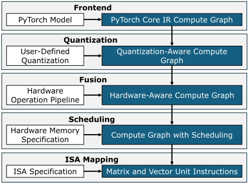
生成器所使用的 C++ 编码风格对由高层次综合（HLS）生成的寄存器传输级（RTL）质量有显著影响，会影响面积、时序以及 HLS 工具的运行时间。Voyager 的地址生成器采用嵌套 for 循环实现，地址计算逻辑位于循环体内。为改善 HLS 结果，我们进行了图 8 所示的两项优化：(1) 常量预计算（Pre-computation of constants）：任何可以在循环嵌套之外计算的值，例如循环边界或循环步长，都被移出循环体。这缩短了流水线内各操作之间的依赖链，从而改善时序。此外，这还减少了 HLS 工具在调度过程中必须分析的算术运算数量。(2) 扁平化循环控制（Flattened loop control）：我们将循环重构为无限循环，并在循环体内设置显式的 break 条件。这避免了 HLS 工具在循环头部评估循环边界时所引入的最后一次额外迭代。这加快了内层循环的执行速度；由于存在多层嵌套循环，这一优化具有显著影响。
为了将模型高效地部署到 Voyager 生成的加速器上，我们将编译器与硬件模板进行了协同设计。与许多深度神经网络（DNN）加速器一样，Voyager 采用领域专用指令集，因而需要一个定制编译器将高层模型转换为经过优化的硬件指令。该编译器以 PyTorch 模型为输入，通过量化、硬件感知优化和调度等阶段对其进行 lowering，如图 9 所示。
为了直观地展示 Voyager 的软件编译流程，我们展示一个简单的 PyTorch 示例
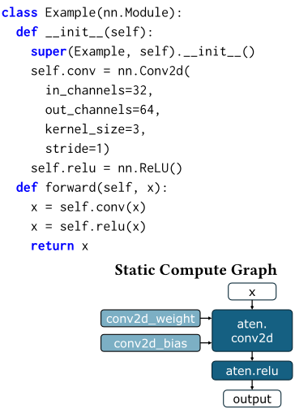
模型，其中包含一个卷积层，后接一个 ReLU，会被 lowering 为硬件加速器的指令集架构（ISA）。
我们编译器的前端将 PyTorch 模型转换为中间表示（IR），以弥合高层模型与加速器指令集架构（ISA）之间的鸿沟。我们使用 PyTorch 2 Export（PT2E）[2] 提取静态计算图，如图 10 所示。我们采用 PyTorch 作为前端，是因为其广泛的应用和生态系统，包括 torchvision [14] 和 Hugging Face Transformers [18]。用户只需极少修改即可将现有模型导入 Voyager 工具链。
尽管大多数机器学习（ML）框架原生支持量化，包括训练后量化（post-training quantization）和量化感知训练（quantization-aware training），但它们仅支持有限的数据类型和量化方案。它们并未提供对最先进量化技术的内置支持。为解决这一问题，我们的编译器集成了一个自定义的量化框架，用户可以在其中对权重、激活值和偏置的量化行为进行细粒度控制，如图
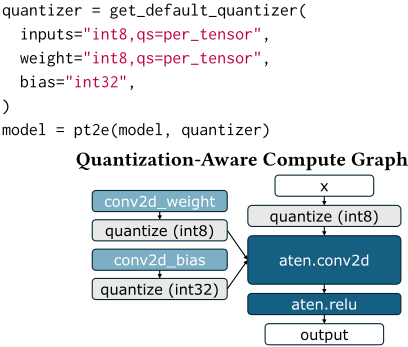
图 11. 量化器为图节点标注量化意图，并插入伪量化（fake quantization）算子，以在浮点模型中模拟量化行为。
数据类型。Voyager 将数据类型支持扩展至任意位宽整数、浮点数、posit 和 NormalFloat。用户可以通过伪量化函数定义自定义类型，该函数将 BFloat16 值映射到自定义类型。
量化方案。我们支持广泛的量化方案。尽管 PyTorch 提供了逐张量（per-tensor）和逐通道（per-channel）缩放——它们常用于 int8 和 FP8 量化——但当精度降至 8 位以下时，这些方法便无法保持精度。微缩放（Microscaling），也称为分块量化（block-wise quantization），在低于 8 位的量化中已展现出显著的精度提升。较小的块大小通常能带来更高的精度，但代价是每参数位数和计算量的增加。据我们所知，我们是首个支持块大小和数据类型均可完全配置的微缩放的编译器。
量化粒度。我们提供细粒度的量化控制，允许根据硬件约束和性能目标为每一层指定不同的数据类型和量化方案。这对于混合精度量化至关重要——在此类量化中，敏感度较低的层可以使用较低精度来减小模型大小。
Voyager 执行三种类型的融合：量化融合、算子融合和重塑融合。
量化融合。在量化之后，我们的编译器将伪量化模块替换为可由硬件执行的 quantize 和 dequantize 算子。quantize 算子先对浮点张量进行缩放，再将其转换为目标数据类型；而 dequantize 算子则通过除以相应的缩放因子，将量化张量转换回浮点数。缩放因子根据在对样本数据进行校准运行期间观察到的张量统计信息计算得出。Voyager 同时支持为获得更好硬件效率的 2 的幂缩放，以及为获得更高精度的通用浮点缩放。当使用直接量化（例如缩放因子为 1）时，冗余的 dequantize 算子会被移除。为了实现仅整数的通用矩阵乘（GEMM），反量化被推迟到 GEMM 之后进行，使计算保持整数格式，从而提升能效。
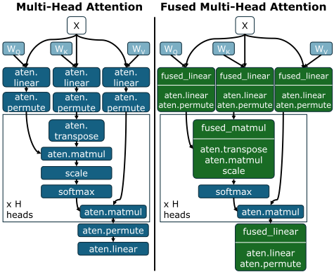
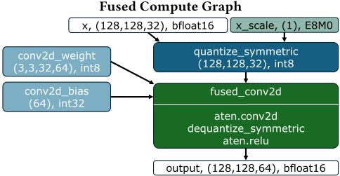
算子融合。编译器将多个较小的运算组合成单个内核，避免对内存的中间写入，并提高硬件利用率。我们支持将矩阵运算与其后续的逐元素向量运算融合，也支持跨多个向量运算进行融合。
9
融合由向量流水线结构引导：编译器会找出与所支持硬件流水线相匹配的顺序模式，并将其替换为融合指令。图 13 展示了这一变换，其中卷积、反量化与修正线性单元（ReLU）激活的序列被替换为单个融合算子。
重塑融合。编译器还会将重塑（reshape）和反量化操作与其消费者算子融合。向量单元的地址生成器可以在访存过程中直接执行转置和轴排列等重塑操作，从而消除中间张量，同时降低延迟和内存开销。这对 Transformer 尤其有益，因为多头注意力涉及多次重塑：query、key 和 value 投影经过排列以分离出头维度，key 被转置，而各注意力头的输出则通过另一次排列重新组合。如图 12 所示，编译器将线性投影与排列和转置相融合，生成访存次数更少、延迟更低的自注意力计算图。
为了支持下游优化与硬件映射，Voyager 编译器会生成一种面向硬件、专为 Voyager 所生成加速器定制的中间表示（IR）。如图 14 所示，该 IR 同时捕获高层操作与底层细节，例如数据类型、张量形状和内存地址。其核心单元是 Tensor 对象，它类似于 PyTorch 张量，但增加了与硬件相关的元数据，例如形状、数据类型、内存地址，以及一个可选的排列（permutation）字段，用于支持隐式重塑（例如转置）。
PyTorch 操作被划分为四大类：(1) 矩阵操作，包括卷积和通用矩阵乘法（GEMM）；(2) 逐元素操作，例如 ReLU、GeLU 和残差加法；(3) 复杂归约操作，例如 LayerNorm 和 softmax；(4) 重塑操作，例如 permute、view 和 transpose。每个计算图节点都映射到一个类型为 (1)、(3) 或 (4) 的 IR 块。如果某个节点表示融合操作，其逐元素函数（第 2 类）将作为后处理列表附加在同一 IR 块中。例如，卷积后接残差加法和 ReLU 的操作会被表示为一个带有融合逐元素变换的矩阵操作。
将深度神经网络（DNN）映射到硬件上涉及循环分块（loop tiling）、循环排序（loop ordering）和循环融合（loop fusion）等调度决策。可能的调度空间十分庞大，每种调度都会在各存储层级之间产生不同的数据复用模式。对某一类数据复用进行优化会减少另一类数据复用的机会。Voyager 通过扩展 Interstellar [19] 来高效地将 DNN 层调度到所生成的硬件上，从而解决这一问题。
name: "conv2d_fused" op_list: [{ name: "conv2d" target: "conv2d" input : node: "quantize_symmetric" shape: [128,128,32] dtype: "int8" address: 18688 weight: node: "conv2d_weight" shape: [3,3,32,64] dtype: "int8" address: 0 bias: node: "conv2d_bias" shape: [64] dtype: "int32" address: 18432 }, { name: "dequantize_default" target: "dequantize" dtype: "int24" input : node: "conv2d" shape: [128,128,64] dtype: "int32" scale: node: "conv2d_scale" shape: [1] dtype: "bfloat16" }, { name: "relu" target: "relu" input : node: "dequantize_default" shape: [128,128,64] dtype: "bfloat16" }] output: node: "conv
Voyager 的性能模型将执行时间分解为两个组成部分：(1) L1 分块计算时间：该时间取决于分块大小以及脉动阵列中计算单元的数量。在计算开始之前，权重必须先加载到脉动阵列中，阵列中每一行需要一个时钟周期。为了隐藏这一延迟，处理单元（PE）内的权重采用双缓冲机制，使得下一个分块的权重加载与当前分块的计算相互重叠。因此，每个分块的计算时间取以下两者的最大值：(a) 执行计算所需的时间，由分块大小和 PE 延迟决定；(b) 权重加载时间。一个 L1 分块的总延迟等于该单分块延迟乘以脉动阵列分块的数量。(2) L1 分块访存时间：指将分块后的输入张量和权重张量传输到 L1 缓冲区所需的时间，由存储带宽决定。
总运行时间取 L1 计算时间与访存时间中的最大值，再乘以 L2 存储器中分块的数量。如果设计缺少双缓冲的累加缓冲区，模型还会将向量单元的计算时间纳入最大值计算，从而考虑向量单元的背压影响。对于更深的存储层次结构，这一过程会在每一级重复执行。通过纳入这些硬件特定的效应，我们的性能模型能够提供快速而准确的运行时间预测。
图 15 展示了一个生成的调度方案示例，其中给出了针对卷积的多级循环嵌套。
利用加速器中间表示（IR）以及来自 Interstellar 的调度方案，编译器将高层操作映射到 Voyager 硬件指令上。矩阵单元指令对循环配置字段进行编码，例如边界、顺序和步长。Interstellar 的循环嵌套可直接映射到这一结构，从而只需极少的变换即可将调度方案转换为地址生成器配置。向量单元指令同样包含地址生成器配置，但在此基础上进一步扩展，用于指定向量流水线配置。这包括为每一级选择功能单元，以及累加引擎、归约引擎和量化/反量化的相关设置。这些指令共同使编译器能够高效地将包括融合模式在内的各类操作映射到加速器上。
图 16 展示了矩阵单元指令的一个子集。基地址字段指定张量在主存中的存储地址。loops 字段按照 Interstellar 所生成调度方案规定的两级层次结构对循环边界进行编码。*_loop_index 字段将每个维度映射到 loops 字段中其对应的索引。
11
struct MatrixUnitInst { uint64_t input_base_address = 18688; uint64_t weight_base_address = 0; uint64_t bias_base_address = 18432; uint16_t loops[2][6] = { {16,4,2,1}, // L2 level {2,2,3,3,8,32} // accum buffer level }; uint3_t x_loop_index[2] = {1,5}; uint3_t y_loop_index[2] = {0,4}; uint3_t reduction_loop_index[2] = {3,0}; uint3_t output_channel_loop_index[2] = {2,1}; uint3_t fx_index = 2; uint3_t fy_index = 3; ... };
| Runtime | Speedup | |
|---|---|---|
| Baseline | 2.67 ms | - |
| Fusion + Permute & Transpose | 2.65 ms | 0.75% |
| + Residual | 2.61 ms | 2.30% |
| + NoNorm | 2.37 ms | 12.66% |
| Energy-Only | 2.44 ms | - |
| Model Coarse-Grained Perf. Model | 2.44 ms | - |
| Fine-Grained Perf. Model | 2.37 ms | 2.86% |
| Without Double Buffer | 2.37 ms | - |
| With Double Buffer | 2.29 ms | 3.37% |
| | Runtime | Speedup |
我们使用来自不同应用领域的深度神经网络（DNN）模型，在多个设计点上对 Voyager 进行评估。我们的评估流程包括：使用 Catapult HLS 进行高层次综合（HLS）以生成寄存器传输级（RTL）Verilog、使用 Synopsys VCS 进行周期精确仿真，以及使用 Synopsys Design Compiler 进行逻辑综合。乘加（MAC）利用率定义为理想周期数除以实际达到的周期数，其中理想周期数是该层中 MAC 运算的总数除以硬件 MAC 单元的数量。在第 6.1 节中，我们分析了 Voyager 内部关键设计决策的影响。第 6.2 节展示了如何使用 Voyager 进行设计空间探索。最后，第 6.3 节和第 6.4 节将 Voyager 与最先进的硬件生成器以及手工优化的设计进行了比较。
我们使用 TSMC 16 nm 工艺下面向 MobileBERT-TINY 的 32 × 32 E4M3 设计来评估 Voyager 中各项优化的影响。
编码风格优化。采用未优化的编码风格时，设计的最高频率被限制在 400 MHz，面积为 1.16 mm²。相比之下，优化后的编码风格显著改善了时序收敛，使最高频率可达 1 GHz，面积为 1.41 mm²。当归一化到相同频率（400 MHz）时，优化后设计的面积为 1.18 mm²，与未优化版本相比面积仅增加 1.7%。
算子融合。Voyager 能够融合算子，从而减少访存并改善延迟。表 2 展示了不同融合程度对延迟的影响，最终运行时间改善了 12.66%。
调度。表 2 比较了三种调度策略下的运行时间：仅考虑能耗的启发式方法、粗粒度性能模型，以及我们的细粒度性能模型。该模型可实现最多降低 2.9% 的运行时间，体现了精确性能建模在调度选择中的价值。
双缓冲。矩阵单元与向量单元之间的紧密耦合，在向量单元受访存瓶颈制约的情况下可能导致性能下降。为缓解这一问题，Voyager 支持可选的双缓冲累加缓冲区，将其输出与向量单元的输入解耦，从而使运行时间降低了 3%（表 2）。
为了展示 Voyager 的设计空间探索能力，我们展示如何利用它来探索：(1) 不同的数据类型与量化方案（资源类型），以及 (2) 在各种深度神经网络（DNN）上的加速器规模（资源分配）。在这些研究中，我们使用编译器给出的最优调度。
数据类型与量化方案探索。借助位精确（bit-accurate）C++ 模型，Voyager 可以在完整数据集上运行推理，以评估不同 DNN 在不同数据类型和量化方案下的硬件级精度。表 3 展示了量化为不同类型（FP32、BF16、E4M3、Posit8、INT8 和 MXINT8）的视觉与自然语言处理（NLP）模型的各项指标。我们使用来自 torchvision [14]、timm [17] 和 transformers [18] 库的预训练模型。这些结果表明，微缩放（MXINT8）能够实现高精度整数计算，其精度可与浮点格式相媲美。Voyager 使得在多样化模型上评估这一点成为可能。然而，使用微缩放可能带来面积开销，Voyager 也允许我们对此进行评估。表 5 报告了 Voyager 生成的加速器在 TSMC 16 nm 工艺、1 GHz 时钟频率下的面积。由于额外增加了对输入和权重缩放因子的支持，MXINT8 在寻址与控制方面比 INT8 多需要 43% 的面积（针对 32 × 32 的设计）。然而，由于其累加缓冲区和向量单元更小，其整体面积仍比 INT8 低 5.64%，并且由于脉动阵列更小，比 E4M3 低 11.6%。
12
| Type.Type | Model. | Task (Dataset). | Size. | Accuracy.FP32 | Accuracy.BF16 | Accuracy.E4M3 | Accuracy.Posit8 | Accuracy.INT8 | Accuracy.MXINT8 |
|---|---|---|---|---|---|---|---|---|---|
| Vision | ResNet-18 | Image Classification (ImageNet) | 11.7M | 71.5% | 70.0% | 69.2% | 69.1% | 71.5% | 70.7% |
| Vision | ResNet-50 | Image Classification (ImageNet) | 25.6M | 80.4% | 81.1% | 78.8% | 79.4% | 78.7% | 79.8% |
| Vision | ViT (Base) | Image Classification (ImageNet) | 86M | 84.1% | 84.3% | 83.8% | 84.0% | 75.4% | 84.0% |
| Vision | MobileNetV2 | Image Classification (ImageNet) | 3.5M | 71.1% | 70.1% | 62.5% | 63.8% | 66.0% | 71.3% |
| NLP | MobileBERT-TINY | Sentiment Classification (SST-2) | 15M | 90.8% | 90.7% | 90.6% | 90.4% | 90.4% | 91.1% |
| NLP | BERT (Base) | Sentiment Classification (SST-2) | 110M | 93.2% | 93.0% | 93.1% | 92.8% | 92.4% | 93.1% |
| Type.Type | Model. | Task (Dataset). | Size. | Accuracy.FP32 | Accuracy.BF16 | Accuracy.E4M3 | Accuracy.Posit8 | Accuracy.INT8 | Accuracy.MXINT8 |
| Model | Metric | Array Size and Total SRAM Capacity.8x8 (48 KB) | Array Size and Total SRAM Capacity.8x16 (80 KB) | Array Size and Total SRAM Capacity.16x16 (96 KB) | Array Size and Total SRAM Capacity.16x32 (160 KB) | Array Size and Total SRAM Capacity.32x32 (192 KB) | Array Size and Total SRAM Capacity.32x64 (320 KB) | Array Size and Total SRAM Capacity.64x64 (384 KB) |
|---|---|---|---|---|---|---|---|---|
| ResNet-18 | Runtime (cycles) MAC Utilization (%) | 31.76M 90.9 | 15.88M 90.9 | 7.90M 93.0 | 3.96M 92.9 | 2.07M 91.9 | 1.04M 91.4 | 660K 76.8 |
| ResNet-50 | Runtime (cycles) MAC Utilization (%) | 67.70M 95.4 | 33.86M 95.4 | 17.00M 96.2 | 8.51M 96.1 | 4.40M 94.9 | 2.21M 94.5 | 1.30M 82.1 |
| ViT (Base) | Runtime (cycles) MAC Utilization (%) | 326.19M 99.4 | 163.14M 99.4 | 84.37M 99.3 | 42.24M 99.2 | 22.74M 98.0 | 12.44M 96.5 | 7.53M 88.0 |
| MobileNetV2 | Runtime (cycles) MAC Utilization (%) | 7.373M 86.7 | 3.760M 84.9 | 2.010M 83.7 | 1.099M 79.3 | 659K 78.0 | 534K 58.6 | 407K 52.5 |
| MobileBERT-TINY Sequence Length = 128 | Runtime (cycles) MAC Utilization (%) | 27.91M 98.3 | 14.00M 98.0 | 7.71M 95.1 | 3.91M 93.8 | 2.37M 86.2 | 1.28M 82.8 | 916K 67.3 |
| BERT (Base) Sequence Length = 128 | Runtime (cycles) MAC Utilization (%) | 179.17M 99.8 | 89.63M 99.8 | 46.07M 99.4 | 23.09M 99.2 | 12.24M 97.9 | 6.48M 96.2 | 3.80M 90.7 |
| LLaMA 3.2 1B Prefill | Runtime (cycles) | - | - | - | - | 688.0M | - | - |
| Sequence Length = 512 | MAC Utilization (%) | - | - | - | - | 99.8 | - | - |
| Model | Metric | Array Size and Total SRAM Capacity.8x8 (48 KB) | Array Size and Total SRAM Capacity.8x16 (80 KB) | Array Size and Total SRAM Capacity.16x16 (96 KB) | Array Size and Total SRAM Capacity.16x32 (160 KB) | Array Size and Total SRAM Capacity.32x32 (192 KB) | Array Size and Total SRAM Capacity.32x64 (320 KB) | Array Size and Total SRAM Capacity.64x64 (384 KB) |
加速器规模探索。Voyager 的设计在不同脉动阵列规模下均能有效扩展（表 4）。运行时间随阵列规模近乎线性地下降，同时保持较高的硬件利用率。
表 6 将 Voyager 的设计与另外两个生成器 Gemmini 和 NVDLA 生成的设计进行了比较。为了公平比较，我们将工艺节点、数据类型、MAC 数量和频率与先前工作中报告的设计点保持一致。尽管 Gemmini 的面积低 28%，但 Voyager 的性能显著更优，运行时间低 61%。与 NVDLA 相比，Voyager 的设计面积小 35.91% 至 56.48%，运行时间低 20.84% 至 53.15%。
我们将 Voyager 与两个先前的手工优化加速器进行了比较：CNN 加速器 Simba [16, 21, 22]，以及采用向量缩放量化（VSQ）的 Transformer 加速器 [7]。我们尽可能匹配设计参数。由于手工优化的设计报告的是布局布线后结果，我们将 Voyager 设计的面积按 1.25 倍放大，以计入布局布线开销。
为了与 Simba 进行比较，我们在相同的 TSMC 16nm 工艺下生成了一个设计，其 MAC 数量、数据类型和缓冲区大小均与之匹配（表 7）。虽然 Simba 报告的结果基于更高的时钟频率，但这是由于其电压远高于我们所表征的工艺库，因此难以进行直接的运行时间比较。以周期数比较延迟，Voyager 大幅优于 Simba：ResNet-50 的延迟为 440 万个周期，而 Simba 为 830 万个周期。Voyager 的利用率为 95%，而 Simba 为 48%。即使频率较低，Voyager 在绝对运行时间上仍比 Simba 快 5%。
对于 Transformer VSQ 设计，我们在 TSMC 7nm 工艺下（由于无法获得 5nm）生成了一个 MAC 数量相匹配的设计，如表 7 所示。尽管工艺节点更旧，Voyager 仍能在相同的时钟频率下运行。在 BERT-Base 上，Voyager 的运行时间为 13.4 ms，而 VSQ 为 11.4 ms。然而，与 Voyager 不同，VSQ 并未加速整个模型，因为它缺乏对形状重塑、转置、残差相加和层归一化的支持。在 MAC 利用率方面，两种设计均达到了
13
| Type.Type | Area (mm 2 ).Sys. Array | Area (mm 2 ).SRAM | Area (mm 2 ).Addr. & Ctrl. | Area (mm 2 ).Vector Unit | Area (mm 2 ).Total |
|---|---|---|---|---|---|
| E4M3 | 0.048 | 0.085 | 0.062 | 0.142 | 0.336 |
| 8x8 Posit8 | 0.052 | 0.085 | 0.064 | 0.145 | 0.346 |
| INT8 | 0.027 | 0.111 | 0.064 | 0.148 | 0.35 |
| MXINT8 | 0.031 | 0.095 | 0.095 | 0.135 | 0.355 |
| E4M3 | 0.192 | 0.109 | 0.096 | 0.237 | 0.633 |
| 16x16 Posit8 | 0.21 | 0.109 | 0.101 | 0.242 | 0.661 |
| INT8 | 0.109 | 0.211 | 0.098 | 0.25 | 0.667 |
| MXINT8 | 0.123 | 0.123 | 0.161 | 0.224 | 0.632 |
| E4M3 | 0.769 | 0.217 | 0.199 | 0.442 | 1.627 |
| 32x32 Posit8 | 0.846 | 0.217 | 0.215 | 0.45 | 1.728 |
| INT8 | 0.44 | 0.422 | 0.198 | 0.465 | 1.525 |
| MXINT8 | 0.501 | 0.243 | 0.283 | 0.412 | 1.438 |
| E4M3 | 3.104 | 0.434 | 0.453 | 0.825 | 4.817 |
| 64x64 Posit8 | 3.399 | 0.434 | 0.506 | 0.836 | 5.175 |
| INT8 | 1.783 | 0.844 | 0.432 | 0.869 | 3.928 |
| MXINT8 | 2.021 | 0.484 | 0.565 | 0.752 | 3.821 |
| Type.Type | Area (mm 2 ).Sys. Array | Area (mm 2 ).SRAM | Area (mm 2 ).Addr. & Ctrl. | Area (mm 2 ).Vector Unit | Area (mm 2 ).Total |
| # MACs. | Area ( 𝜇 m 2 ).Gemmini | Area ( 𝜇 m 2 ).Voyager | ResNet-50 Time (ms).Gemmini | ResNet-50 Time (ms).Voyager |
|---|---|---|---|---|
| 256 | 116,000 | 160,314 | 43.58 | 17.00 |
| NVDLA | Voyager | NVDLA | Voyager | |
| 2048 | 3,300,000 | 2,114,852 | 3.72 | 2.21 |
| 1024 | 1,800,000 | 1,102,659 | 6.54 | 4.40 |
| 512 | 1,400,000 | 852,504 | 10.75 | 8.51 |
| 256 | 1,000,000 | 456,468 | 21.74 | 17.00 |
| 128 | 840,000 | 394,511 | 50.00 | 33.86 |
| 64 | 550,000 | 239,519 | 136.99 | 67.70 |
| 32 | 510,000 | 221,943 | 277.78 | 130.13 |
| # MACs. | Area ( 𝜇 m 2 ).Gemmini | Area ( 𝜇 m 2 ).Voyager | ResNet-50 Time (ms).Gemmini | ResNet-50 Time (ms).Voyager |
98%。这些比较表明，Voyager 在性能和利用率方面能够匹敌甚至超越手工优化的设计，同时提供更高的设计自动化程度。
Voyager 是一个用于生成深度神经网络（DNN）加速器的端到端框架。其基于高层次综合（HLS）的加速器生成器在数据类型和量化方案方面提供了高度的可配置性。此外，其基于 PyTorch 的编译器能够将模型高效地映射到生成的硬件上，支持量化、算子融合和分块。这些组件共同实现了快速的设计空间探索，包括在完整数据集上评估量化模型以进行精确精度估计的能力。Voyager 生成的设计在多种模型和不同规模下均能持续保持高利用率和高性能，显著优于先前的工作。与先前的生成器相比，在等硬件配置下，Voyager 生成的设计面积最多可降低 56%，运行时间最多可降低 61%。与手工优化的加速器相比，Voyager 的运行时间最多可降低 48%，同时所需的手工工作量显著减少。我们证明了无需传统上所需的大量手工设计与映射工作，也能够实现高性能的 DNN 加速器。
| Metric | Simba | Voyager | VSQ | Voyager |
|---|---|---|---|---|
| # MACs | 1024 | 1024 | 1024 | 1024 |
| Datatype | INT8 | INT8 | INT4 | INT4 |
| Technology | 16nm | 16nm | 5nm | 7nm |
| Frequency (GHz) | 1.797 | 1.0 | 0.909 | 0.909 |
| Voltage (V) | 1.1 | 0.8 | 0.67 | 0.75 |
| Area (mm 2 ) | 3.1 | 1.8 | 0.153 | 0.57 |
| ResNet-50 Cycles | 8.3M | 4.4M | x | x |
| ResNet-50 ms | 4.64 | 4.40 | x | x |
| BERT-Base Cycles | x | x | 10.4M | 12.2M |
| BERT-Base ms | x | x | 11.4 | 13.4 |
| MAC Utilization | 48% | 95% | 98% | 98% |
| Metric | Simba | Voyager | VSQ | Voyager |
This work was supported by funding from DARPA Young Faculty Award, COCOSYS SRC JUMP 2.0 Center, Amazon, Apple, Siemens and PORTAL Affiliates Program.
表 8、表 9、表 10、表 11 和表 12 展示了各已报告模型在 16 × 16 和 32 × 32 设计下逐层的详细运行时结果，以便与相关工作进行便捷比较。总乘加（MAC）利用率的计算方式为：对矩阵运算的理想周期数求和，并对矩阵运算的实际达成周期数求和，再将理想值除以实际值。
15
| Layer.Layer | Count.Count | Unit.Unit | 16 × 16.Ideal Cycles | 16 × 16.Achieved Cycles | 16 × 16.MAC Utilization | 32 × 32.Ideal Cycles | 32 × 32.Achieved Cycles | 32 × 32.MAC Utilization |
|---|---|---|---|---|---|---|---|---|
| conv1_fused 224 × 224 × 3 * 7 × 7 × 3 × 64 | 1 | matrix | 460992 | 956615 | 48.19% | 115248 | 246291 | 46.79% |
| max_pool2d_default 112 × 112 × 64 | 1 | vector | - | 223641 | - | - | 111859 | - |
| quantize_default_1 56 × 56 × 64 | 1 | vector | - | 25163 | - | - | 12618 | - |
| layer1_0_conv1_fused 56 × 56 × 64 * 3 × 3 × 64 × 64 | 2 | matrix | 451584 | 451850 | 99.94% | 112896 | 113366 | 99.59% |
| layer1_0_conv2_fused 56 × 56 × 64 * 3 × 3 × 64 × 64 | 2 | matrix | 451584 | 451850 | 99.94% | 112896 | 113366 | 99.59% |
| layer2_0_conv1_fused 56 × 56 × 64 * 3 × 3 × 64 × 128 | 1 | matrix | 225792 | 226378 | 99.74% | 56448 | 57518 | 98.14% |
| layer2_0_conv2_fused 28 × 28 × 128 * 3 × 3 × 128 × 128 | 1 | matrix | 451584 | 451870 | 99.94% | 112896 | 113355 | 99.59% |
| layer2_0_downsample_0_fused 56 × 56 × 64 * 1 × 1 × 64 × 128 | 1 | matrix | 25088 | 25222 | 99.47% | 6272 | 6491 | 96.62% |
| layer2_1_conv1_fused 28 × 28 × 128 * 3 × 3 × 128 × 128 | 1 | matrix | 451584 | 451870 | 99.94% | 112896 | 113355 | 99.59% |
| layer2_1_conv2_fused 28 × 28 × 128 * 3 × 3 × 128 × 128 | 1 | matrix | 451584 | 451870 | 99.94% | 112896 | 113355 | 99.59% |
| layer3_0_conv1_fused 28 × 28 × 128 * 3 × 3 × 128 × 256 | 1 | matrix | 225792 | 226378 | 99.74% | 56448 | 57518 | 98.14% |
| layer3_0_conv2_fused 14 × 14 × 256 * 3 × 3 × 256 × 256 | 1 | matrix | 451584 | 451835 | 99.94% | 112896 | 113355 | 99.59% |
| layer3_0_downsample_0_fused 28 × 28 × 128 * 1 × 1 × 128 × 256 | 1 | matrix | 25088 | 25222 | 99.47% | 6272 | 6491 | 96.62% |
| layer3_1_conv1_fused 14 × 14 × 256 * 3 × 3 × 256 × 256 | 1 | matrix | 451584 | 451835 | 99.94% | 112896 | 113355 | 99.59% |
| layer3_1_conv2_fused 14 × 14 × 256 * 3 × 3 × 256 × 256 | 1 | matrix | 451584 | 451835 | 99.94% | 112896 | 113355 | 99.59% |
| layer4_0_conv1_fused 14 × 14 × 256 * 3 × 3 × 256 × 512 | 1 | matrix | 225792 | 226154 | 99.84% | 56448 | 56907 | 99.19% |
| layer4_0_conv2_fused 7 × 7 × 512 * 3 × 3 × 512 × 512 | 1 | matrix | 451584 | 451835 | 99.94% | 112896 | 113355 | 99.59% |
| layer4_0_downsample_0_fused 14 × 14 × 256 * 1 × 1 × 256 × 512 | 1 | matrix | 25088 | 25243 | 99.39% | 6272 | 6491 | 96.62% |
| layer4_1_conv1_fused 7 × 7 × 512 * 3 × 3 × 512 × 512 | 1 | matrix | 451584 | 451835 | 99.94% | 112896 | 113809 | 99.19% |
| layer4_1_conv2_fused 7 × 7 × 512 * 3 × 3 × 512 × 512 | 1 | matrix | 451584 | 452597 | 99.78% | 112896 | 113809 | 99.19% |
| adaptive_avg_pool2d_default 7 × 7 × 512 | 1 | vector | - | 3212 | - | - | 1643 | - |
| fc 1 × 512 * 1000 × 512 | 1 | vector | - | 66038 | - | - | 33581 | - |
| Total | - | 7904048 | 93.0% | - | 2071975 | 91.9% |
| Layer.Layer | Count.Count | Unit.Unit | 16 × 16.Ideal Cycles | 16 × 16.Achieved Cycles | 16 × 16.MAC Utilization | 32 × 32.Ideal Cycles | 32 × 32.Achieved Cycles | 32 × 32.MAC Utilization |
16
| Layer. | Count. | Unit. | 16 × 16.Ideal Cycles | 16 × 16.Achieved Cycles | 16 × 16.MAC Utilization | 32 × 32.Ideal Cycles | 32 × 32.Achieved Cycles | 32 × 32.MAC Utilization |
|---|---|---|---|---|---|---|---|---|
| quantize_default_1 56 × 56 × 64 | 1 | vector | - | 25163 | - | - | 12618 | - |
| conv1_fused 224 × 224 × 3 * 7 × 7 × 3 × 64 | 1 | matrix | 460992 | 956615 | 48.19% | 115248 | 246291 | 46.79% |
| max_pool2d_default 112 × 112 × 64 | 1 | vector | - | 223641 | - | - | 111859 | - |
| layer1_0_conv1_fused 56 × 56 × 64 * 1 × 1 × 64 × 64 | 1 | matrix | 50176 | 50310 | 99.73% | 12544 | 12763 | 98.28% |
| layer1_0_conv2_fused 56 × 56 × 64 * 3 × 3 × 64 × 64 | 3 | matrix | 451584 | 451850 | 99.94% | 112896 | 113366 | 99.59% |
| layer1_0_conv3_fused 56 × 56 × 64 * 1 × 1 × 64 × 256 | 1 | matrix | 200704 | 200838 | 99.93% | 50176 | 50395 | 99.56% |
| layer1_0_downsample_0_fused 56 × 56 × 64 * 1 × 1 × 64 × 256 | 1 | matrix | 200704 | 200838 | 99.93% | 50176 | 50395 | 99.56% |
| layer1_1_conv1_fused 56 × 56 × 256 * 1 × 1 × 256 × 64 | 2 | matrix | 200704 | 200838 | 99.93% | 50176 | 50395 | 99.56% |
| layer1_1_conv2_fused 56 × 56 × 64 * 3 × 3 × 64 × 64 | 2 | matrix | 451584 | 451870 | 99.94% | 112896 | 113355 | 99.59% |
| layer1_1_conv3_fused 56 × 56 × 64 * 1 × 1 × 64 × 256 | 3 | matrix | 200704 | 200838 | 99.93% | 50176 | 50395 | 99.56% |
| layer2_0_conv1_fused 56 × 56 × 256 * 1 × 1 × 256 × 128 | 1 | matrix | 401408 | 401542 | 99.97% | 100352 | 100571 | 99.78% |
| layer2_0_conv2_fused 28 × 28 × 128 * 3 × 3 × 128 × 128 | 1 | matrix | 451584 | 452170 | 99.87% | 112896 | 113966 | 99.06% |
| layer2_0_conv3_fused 28 × 28 × 128 * 1 × 1 × 128 × 512 | 1 | matrix | 200704 | 200838 | 99.93% | 50176 | 50395 | 99.56% |
| layer2_0_downsample_0_fused 56 × 56 × 256 * 1 × 1 × 256 × 512 | 1 | matrix | 401408 | 401542 | 99.97% | 100352 | 100571 | 99.78% |
| layer2_1_conv1_fused 28 × 28 × 512 * 1 × 1 × 512 × 128 | 3 | matrix | 200704 | 200838 | 99.93% | 50176 | 50395 | 99.56% |
| layer2_1_conv2_fused 28 × 28 × 128 * 3 × 3 × 128 × 128 | 3 | matrix | 451584 | 451870 | 99.94% | 112896 | 113355 | 99.59% |
| layer2_1_conv3_fused 28 × 28 × 128 * 1 × 1 × 128 × 512 | 1 | matrix | 200704 | 200838 | 99.93% | 50176 | 50395 | 99.56% |
| layer3_0_conv1_fused 28 × 28 × 512 * 1 × 1 × 512 × 256 | 1 | matrix | 401408 | 401542 | 99.97% | 100352 | 100571 | 99.78% |
| layer3_0_conv2_fused 14 × 14 × 256 * 3 × 3 × 256 × 256 | 1 | matrix | 451584 | 452170 | 99.87% | 112896 | 113966 | 99.06% |
| layer3_0_conv3_fused 14 × 14 × 256 * 1 × 1 × 256 × 1024 | 1 | matrix | 200704 | 200838 | 99.93% | 50176 | 50395 | 99.56% |
| layer3_0_downsample_0_fused 28 × 28 × 512 * 1 × 1 × 512 × 1024 | 1 | matrix | 401408 | 401542 | 99.97% | 100352 | 100571 | 99.78% |
| layer3_1_conv1_fused 14 × 14 × 1024 * 1 × 1 × 1024 × 256 | 5 | matrix | 200704 | 200838 | 99.93% | 50176 | 50395 | 99.56% |
| layer3_1_conv2_fused 14 × 14 × 256 * 3 × 3 × 256 × 256 | 5 | matrix | 451584 | 451835 | 99.94% | 112896 | 113355 Continued on | 99.59% next page... |
| Layer. | Count. | Unit. | 16 × 16.Ideal Cycles | 16 × 16.Achieved Cycles | 16 × 16.MAC Utilization | 32 × 32.Ideal Cycles | 32 × 32.Achieved Cycles | 32 × 32.MAC Utilization |
17
| Layer. | Count. | Unit. | 16 × 16.Ideal Cycles | 16 × 16.Achieved Cycles | 16 × 16.MAC Utilization | 32 × 32.Ideal Cycles | 32 × 32.Achieved Cycles | 32 × 32.MAC Utilization |
|---|---|---|---|---|---|---|---|---|
| layer3_1_conv3_fused 14 × 14 × 256 * 1 × 1 × 256 × 1024 | 1 | matrix | 200704 | 200838 | 99.93% | 50176 | 50395 | 99.56% |
| layer4_0_conv1_fused 14 × 14 × 1024 * 1 × 1 × 1024 × 512 | 1 | matrix | 401408 | 401542 | 99.97% | 100352 | 100571 | 99.78% |
| layer4_0_conv2_fused 7 × 7 × 512 * 3 × 3 × 512 × 512 | 1 | matrix | 451584 | 451946 | 99.92% | 112896 | 113355 | 99.59% |
| layer4_0_conv3_fused 7 × 7 × 512 * 1 × 1 × 512 × 2048 | 1 | matrix | 200704 | 200859 | 99.92% | 50176 | 50395 | 99.56% |
| layer4_0_downsample_0_fused 14 × 14 × 1024 * 1 × 1 × 1024 × 2048 | 1 | matrix | 401408 | 401563 | 99.96% | 100352 | 100571 | 99.78% |
| layer4_1_conv1_fused 7 × 7 × 2048 * 1 × 1 × 2048 × 512 | 2 | matrix | 200704 | 200859 | 99.92% | 50176 | 50395 | 99.56% |
| layer4_1_conv2_fused 7 × 7 × 512 * 3 × 3 × 512 × 512 | 2 | matrix | 451584 | 451835 | 99.94% | 112896 | 113355 | 99.59% |
| layer4_1_conv3_fused 7 × 7 × 512 * 1 × 1 × 512 × 2048 | 1 | matrix | 200704 | 200859 | 99.92% | 50176 | 50395 | 99.56% |
| layer4_2_conv3_fused 7 × 7 × 512 * 1 × 1 × 512 × 2048 | 1 | matrix | 200704 | 205493 | 97.67% | 50176 | 52145 | 96.22% |
| adaptive_avg_pool2d_default 7 × 7 × 2048 | 1 | vector | - | 12620 | - | - | 6347 | - |
| fc 1 × 2048 * 1000 × 2048 | 1 | vector | - | 259574 | - | - | 131885 | - |
| Total | - | 16896078 | 96.2% | - | 4378064 | 94.9% |
| Layer. | Count. | Unit. | 16 × 16.Ideal Cycles | 16 × 16.Achieved Cycles | 16 × 16.MAC Utilization | 32 × 32.Ideal Cycles | 32 × 32.Achieved Cycles | 32 × 32.MAC Utilization |
| Layer. | Count. | Unit. | 16 × 16.Ideal Cycles | 16 × 16.Achieved Cycles | 16 × 16.MAC Utilization | 32 × 32.Ideal Cycles | 32 × 32.Achieved Cycles | 32 × 32.MAC Utilization |
|---|---|---|---|---|---|---|---|---|
| add 197 × 768 | 1 | vector | - | 18989 | - | - | 9533 | - |
| add_scalar 1 × 768 | 1 | vector | - | 173 | - | - | 125 | - |
| classifier 1 × 768 * 768 × 1000 | 1 | vector | - | 98294 | - | - | 49965 | - |
| layer_norm_24 224 × 768 | 1 | vector | - | 86336 | - | - | 43326 | - |
| layer_norm_fused 224 × 768 | 24 | vector | - | 86334 | - | - | 43323 | - |
| matmul_24_1_fused 224 × 64 * 64 × 256 | 144 | matrix | 12544 | 14500 | 86.51% | 3136 | 4439 | 70.65% |
| matmul_36_1_fused 224 × 224 * 224 × 64 | 144 | matrix | 12544 | 12678 | 99.09% | 3136 | 3362 | 93.28% |
| quantize_default_7 224 × 768 | 23 | vector | - | 21579 | - | - | 10826 | - |
| Continued on next page... | Continued on next page... | Continued on next page... | Continued on next page... | Continued on next page... | Continued on next page... | Continued on next page... | Continued on next page... | Continued on next page... |
| Layer. | Count. | Unit. | 16 × 16.Ideal Cycles | 16 × 16.Achieved Cycles | 16 × 16.MAC Utilization | 32 × 32.Ideal Cycles | 32 × 32.Achieved Cycles | 32 × 32.MAC Utilization |
18
| Layer. | Count. | Unit. | 16 × 16.Ideal Cycles | 16 × 16.Achieved Cycles | 16 × 16.MAC Utilization | 32 × 32.Ideal Cycles | 32 × 32.Achieved Cycles | 32 × 32.MAC Utilization |
|---|---|---|---|---|---|---|---|---|
| softmax_12_fused 224 × 256 | 144 | vector | - | 19057 | - | - | 9646 | - |
| patch_embeddings_projection 224 × 224 × 3 * 16 × 16 × 3 × 768 | 1 | matrix | 451584 | 603197 | 74.87% | 112896 | 172323 | 65.51% |
| attention_key_fused 224 × 768 * 768 × 768 | 36 | matrix | 516096 | 516230 | 99.97% | 129024 | 129250 | 99.83% |
| attention_output_dense_fused_0 12 × 224 × 64 * 768 × 768 | 1 | matrix | 516096 | 525447 | 98.22% | 129024 | 134528 | 95.91% |
| intermediate_dense_fused 224 × 768 * 768 × 3072 | 12 | matrix | 2064384 | 2064930 | 99.97% | 516096 | 519608 | 99.32% |
| output_dense_fused 224 × 3072 * 3072 × 768 | 12 | matrix | 2064384 | 2064930 | 99.97% | 516096 | 519608 | 99.32% |
| attention_output_dense_fused_1 12 × 224 × 64 * 768 × 768 | 11 | matrix | 516096 | 516641 | 99.90% | 129024 | 132536 | 97.35% |
| Total | - | 84369325 | 99.3% | - | 22741874 | 98.0% |
| Layer. | Count. | Unit. | 16 × 16.Ideal Cycles | 16 × 16.Achieved Cycles | 16 × 16.MAC Utilization | 32 × 32.Ideal Cycles | 32 × 32.Achieved Cycles | 32 × 32.MAC Utilization |
| Layer.Layer | Count.Count | Unit.Unit | 16 × 16.Ideal Cycles | 16 × 16.Achieved Cycles | 16 × 16.MAC Utilization | 32 × 32.Ideal Cycles | 32 × 32.Achieved Cycles | 32 × 32.MAC Utilization |
|---|---|---|---|---|---|---|---|---|
| attention_output_dense_fused 128 × 768 * 768 × 768 | 12 | matrix | 294912 | 298537 | 98.79% | 73728 | 76485 | 96.40% |
| attention_self_key_fused 128 × 768 * 768 × 768 | 36 | matrix | 294912 | 295053 | 99.95% | 73728 | 73965 | 99.68% |
| intermediate_dense_fused 128 × 768 * 768 × 3072 | 12 | matrix | 1179648 | 1179790 | 99.99% | 294912 | 295149 | 99.92% |
| output_dense_fused 128 × 3072 * 3072 × 768 | 12 | matrix | 1179648 | 1180393 | 99.94% | 294912 | 297092 | 99.26% |
| classifier 1 × 768 * 768 × 2 | 1 | vector | - | 1635 | - | - | 1634 | - |
| layer_norm_23 128 × 768 | 1 | vector | - | 49464 | - | 3072 | 24886 | - |
| layer_norm_fused 128 × 768 | 23 | vector | - | 49462 | - | 3072 | 24883 | - |
| matmul_24_fused 128 × 64 * 64 × 128 | 144 | matrix | 4096 | 5135 | 79.77% | 1024 | 1778 | 57.57% |
| matmul_36_fused 128 × 128 * 128 × 64 | 144 | matrix | 4096 | 4237 | 96.67% | 1024 | 1261 | 81.18% |
| pooler_dense 1 × 768 * 768 × 768 | 1 | matrix | 36864 | 74955 | 49.17% | 18432 | 37491 | 49.15% |
| quantize_default 128 × 768 | 1 | vector | - | 12361 | - | - | 6216 | - |
| softmax_12_fused 128 × 128 | 144 | vector | - | 6379 | - | - | 3304 | - |
| Continued on next page... | Continued on next page... | Continued on next page... | Continued on next page... | Continued on next page... | Continued on next page... | Continued on next page... | Continued on next page... | Continued on next page... |
| Layer.Layer | Count.Count | Unit.Unit | 16 × 16.Ideal Cycles | 16 × 16.Achieved Cycles | 16 × 16.MAC Utilization | 32 × 32.Ideal Cycles | 32 × 32.Achieved Cycles | 32 × 32.MAC Utilization |
19
| Layer. | Count. | Unit. | 16 × 16.Ideal Cycles | 16 × 16.Achieved Cycles | 16 × 16.MAC Utilization | 32 × 32.Ideal Cycles | 32 × 32.Achieved Cycles | 32 × 32.MAC Utilization |
|---|---|---|---|---|---|---|---|---|
| tanh 1 × 768 | 1 | vector | - | 171 | - | - | 123 | - |
| Total | - | 46070904 | 99.4% | - | 12243503 | 97.9% |
| Layer. | Count. | Unit. | 16 × 16.Ideal Cycles | 16 × 16.Achieved Cycles | 16 × 16.MAC Utilization | 32 × 32.Ideal Cycles | 32 × 32.Achieved Cycles | 32 × 32.MAC Utilization |
| Layer.Layer | Count.Count | Unit.Unit | 16 × 16.Ideal Cycles | 16 × 16.Achieved Cycles | 16 × 16.MAC Utilization | 32 × 32.Ideal Cycles | 32 × 32.Achieved Cycles | 32 × 32.MAC Utilization |
|---|---|---|---|---|---|---|---|---|
| add_10 128 × 512 | 21 | vector | - | 8267 | - | - | 4171 | - |
| add_4_fused 128 × 128 | 63 | vector | - | 2121 | - | - | 1096 | - |
| classifier 1 × 512 * 512 × 2 | 21 | vector | - | 1123 | - | - | 1122 | - |
| matmul_2_fused 128 × 32 * 32 × 128 | 84 | matrix | 2048 | 3094 | 66.18% | 512 | 1262 | 40.57% |
| matmul_6_fused 128 × 128 * 128 × 32 | 84 | matrix | 2048 | 2189 | 93.56% | 512 | 748 | 68.45% |
| attention_output_dense_fused 4 × 128 × 32 * 128 × 128 | 21 | matrix | 8192 | 9294 | 88.12% | 2048 | 2791 | 73.38% |
| attention_self_query_fused 128 × 128 * 128 × 128 | 42 | matrix | 8192 | 8333 | 98.31% | 2048 | 2285 | 89.60% |
| attention_self_value_fused 128 × 512 * 512 × 128 | 21 | matrix | 32768 | 32908 | 99.57% | 8192 | 8428 | 97.19% |
| bottleneck_input_dense_fused 128 × 512 * 512 × 128 | 42 | matrix | 32768 | 33802 | 96.94% | 8192 | 8926 | 91.78% |
| ffn_intermediate_dense_fused 128 × 128 * 128 × 512 | 42 | matrix | 32768 | 32909 | 99.57% | 8192 | 8429 | 97.18% |
| ffn_output_dense_fused 128 × 512 * 512 × 128 | 42 | matrix | 32768 | 33805 | 96.93% | 8192 | 8930 | 91.77% |
| output_bottleneck_dense_fused 128 × 128 * 128 × 512 | 21 | matrix | 32768 | 36750 | 89.16% | 8192 | 10459 | 78.32% |
| quantize_default 128 × 512 | 21 | vector | - | 8265 | - | - | 4168 | - |
| softmax_1_fused 128 × 128 | 84 | vector | - | 6379 | - | - | 3304 | - |
| Total | - | 7713636 | 95.1% | - | 2369283 | 86.2% |
| Layer.Layer | Count.Count | Unit.Unit | 16 × 16.Ideal Cycles | 16 × 16.Achieved Cycles | 16 × 16.MAC Utilization | 32 × 32.Ideal Cycles | 32 × 32.Achieved Cycles | 32 × 32.MAC Utilization |
| Layer. | Count. | Unit. | 32 × 32.Ideal Cycles | 32 × 32.Achieved Cycles | 32 × 32.MAC Utilization |
|---|---|---|---|---|---|
| add_39_fused 1 × 8 × 512 × 64 | 128 | vector | - | 16,456 | - |
| Continued on next page... | Continued on next page... | Continued on next page... | Continued on next page... | Continued on next page... | Continued on next page... |
| Layer. | Count. | Unit. | 32 × 32.Ideal Cycles | 32 × 32.Achieved Cycles | 32 × 32.MAC Utilization |
20
| Layer. | Count. | Unit. | 32 × 32.Ideal Cycles | 32 × 32.Achieved Cycles | 32 × 32.MAC Utilization |
|---|---|---|---|---|---|
| layernorm_default_fused 1 × 32 × 64 × 512 | 32 | vector | - | 262,451 | - |
| matmul_2_fused 512 × 512 * 512 × 64 | 512 | matrix | 16384 | 16754 | 97.79% |
| matmul_34_fused 512 × 64 * 64 × 512 | 512 | matrix | 16384 | 16620 | 98.58% |
| model_layers_0_mlp_down_proj_fused 512 × 8192 * 8192 × 2048 | 16 | matrix | 8,388,608 | 8,390,496 | 99.98% |
| model_layers_0_mlp_gate_proj_fused 512 × 2048 * 2048 × 8192 | 16 | matrix | 16,777,216 | 16,780,160 | 99.98% |
| model_layers_0_mlp_up_proj_fused 512 × 2048 * 2048 × 8192 | 16 | matrix | 8,388,608 | 8,391,520 | 99.79% |
| model_layers_0_self_attn_k_proj_fused 512 × 2048 * 2048 × 512 | 32 | matrix | 524,288 | 524,656 | 99.93% |
| model_layers_0_self_attn_o_proj_fused 512 × 2048 * 2048 × 2048 | 16 | matrix | 2,097,152 | 2,097,520 | 99.98% |
| model_layers_0_self_attn_q_proj_fused 512 × 2048 * 2048 × 2048 | 16 | matrix | 2,097,152 | 2,097,520 | 99.98% |
| mul_2_fused 512 × 2048 * 2048 × 2048 | 16 | vector | - | 65608 | - |
| mul_4_fused 512 × 2048 * 2048 × 2048 | 16 | vector | - | 16456 | - |
| permute_default_1_fused 4 × 1 × 8 × 512 × 64 | 16 | vector | - | 16459 | - |
| permute_default_fused 512 × 2048 * 2048 × 2048 | 16 | vector | - | 65608 | - |
| quantize_default 32 × 64 × 512 | 32 | vector | - | 65608 | - |
| slice_1 32 × 512 × 64 -> 32 × 64 × 512 | 16 | vector | - | 32843 | - |
| slice_2_fused 32 × 512 × 64 -> 512 × 32 × 64 | 16 | vector | - | 32843 | - |
| slice_3 32 × 512 × 64 -> 32 × 64 × 512 | 16 | vector | - | 8267 | - |
| slice_4_fused 32 × 512 × 64 -> 512 × 32 × 64 | 16 | vector | - | 8267 | - |
| softmax_1_fused 512 × 512 | 512 | vector | - | 49384 | - |
| lm_head 512 × 2048 * 2048 × 126976 | 1 | matrix | 8,126,464 | 8,127,936 | 99.98% |
| Total | - | 687,950,352 | 99.8% |
| Layer. | Count. | Unit. | 32 × 32.Ideal Cycles | 32 × 32.Achieved Cycles | 32 × 32.MAC Utilization |
21
| Layer.Layer | Count.Count | Unit.Unit | 16 × 16.Ideal Cycles | 16 × 16.Achieved Cycles | 16 × 16.MAC Utilization | 32 × 32.Ideal Cycles | 32 × 32.Achieved Cycles | 32 × 32.MAC Utilization |
|---|---|---|---|---|---|---|---|---|
| features_0_0_fused 224 × 224 × 3 * 3 × 3 × 3 × 32 | 1 | matrix | 42336 | 466179 | 9.08% | 10584 | 117505 | 9.00% |
| features_1_conv_0_0_fused 112 × 112 × 32 * 3 × 3 × 1 × 32 | 1 | dwc | 25088 | 26794 | 93.63% | 12544 | 13460 | 93.19% |
| features_1_conv_1_fused 112 × 112 × 16 * 1 × 1 × 32 × 16 | 1 | matrix | 25088 | 25224 | 99.46% | 6272 | 12765 | 49.13% |
| features_2_conv_0_0_fused 112 × 112 × 16 * 1 × 1 × 16 × 96 | 1 | matrix | 75264 | 75400 | 99.82% | 18816 | 37853 | 49.71% |
| features_2_conv_1_0_fused 112 × 112 × 96 * 3 × 3 × 1 × 96 | 1 | dwc | 18816 | 80155 | 23.47% | 9408 | 40153 | 23.43% |
| features_2_conv_2_fused 56 × 56 × 96 * 1 × 1 × 96 × 24 | 1 | matrix | 28224 | 37768 | 74.73% | 7056 | 9629 | 73.28% |
| features_3_conv_0_0_fused 56 × 56 × 24 * 1 × 1 × 24 × 144 | 2 | matrix | 42336 | 56584 | 74.82% | 10584 | 15901 | 66.56% |
| features_3_conv_1_0_fused 56 × 56 × 144 * 3 × 3 × 1 × 144 | 1 | dwc | 28224 | 31018 | 90.99% | 14112 | 17354 | 81.32% |
| features_3_conv_2_fused 56 × 56 × 144 * 1 × 1 × 144 × 24 | 1 | matrix | 42336 | 56584 | 74.82% | 10584 | 15901 | 66.56% |
| features_4_conv_1_0_fused 56 × 56 × 144 * 3 × 3 × 1 × 144 | 1 | dwc | 7056 | 30997 | 22.76% | 3528 | 17333 | 20.35% |
| features_4_conv_2_fused 28 × 28 × 144 * 1 × 1 × 144 × 32 | 1 | matrix | 14112 | 14248 | 99.05% | 3528 | 4141 | 85.20% |
| features_5_conv_0_0_fused 28 × 28 × 32 * 1 × 1 × 32 × 192 | 3 | matrix | 18816 | 18952 | 99.28% | 4704 | 4925 | 95.51% |
| features_5_conv_1_0_fused 28 × 28 × 192 * 3 × 3 × 1 × 192 | 2 | dwc | 9408 | 10726 | 87.71% | 4704 | 5506 | 85.43% |
| features_5_conv_2_fused 28 × 28 × 192 * 1 × 1 × 192 × 32 | 2 | matrix | 18816 | 18952 | 99.28% | 4704 | 4925 | 95.51% |
| features_7_conv_1_0_fused 28 × 28 × 192 * 3 × 3 × 1 × 192 | 1 | dwc | 2352 | 10695 | 21.99% | 1176 | 5475 | 21.48% |
| features_7_conv_2_fused 14 × 14 × 192 * 1 × 1 × 192 × 64 | 1 | matrix | 9408 | 9544 | 98.58% | 2352 | 2573 | 91.41% |
| features_8_conv_0_0_fused 14 × 14 × 64 * 1 × 1 × 64 × 384 | 4 | matrix | 18816 | 18952 | 99.28% | 4704 | 4925 | 95.51% |
| features_8_conv_1_0_fused 14 × 14 × 384 * 3 × 3 × 1 × 384 | 4 | dwc | 4704 | 6238 | 75.41% | 2352 | 3358 | 70.04% |
| features_8_conv_2_fused 14 × 14 × 384 * 1 × 1 × 384 × 64 | 3 | matrix | 18816 | 18952 | 99.28% | 4704 | 4925 | 95.51% |
| features_11_conv_2_fused 14 × 14 × 384 * 1 × 1 × 384 × 96 | 1 | matrix | 28224 | 28360 | 99.52% | 7056 | 7277 | 96.96% |
| features_12_conv_0_0_fused 14 × 14 × 96 * 1 × 1 × 96 × 576 | 3 | matrix | 42336 | 42472 | 99.68% | 10584 | 10805 | 97.95% |
| features_12_conv_1_0_fused 14 × 14 × 576 * 3 × 3 × 1 × 576 | 2 | dwc | 7056 | 9310 | 75.79% | 3528 | 4990 | 70.70% |
| features_12_conv_2_fused 14 × 14 × 576 * 1 × 1 × 576 × 96 | 2 | matrix | 42336 | 42472 | 99.68% | 10584 | 10805 Continued on | 97.95% next page... |
| Layer.Layer | Count.Count | Unit.Unit | 16 × 16.Ideal Cycles | 16 × 16.Achieved Cycles | 16 × 16.MAC Utilization | 32 × 32.Ideal Cycles | 32 × 32.Achieved Cycles | 32 × 32.MAC Utilization |
22
| Layer.Layer | Count.Count | Unit.Unit | 16 × 16.Ideal Cycles | 16 × 16.Achieved Cycles | 16 × 16.MAC Utilization | 32 × 32.Ideal Cycles | 32 × 32.Achieved Cycles | 32 × 32.MAC Utilization |
|---|---|---|---|---|---|---|---|---|
| features_14_conv_1_0_fused 14 × 14 × 576 * 3 × 3 × 1 × 576 | 1 | dwc | 1764 | 9293 | 18.98% | 882 | 4973 | 17.73% |
| features_14_conv_2_fused 7 × 7 × 576 * 1 × 1 × 576 × 160 | 1 | matrix | 17640 | 17797 | 99.12% | 4410 | 4631 | 95.23% |
| features_15_conv_0_0_fused 7 × 7 × 160 * 1 × 1 × 160 × 960 | 3 | matrix | 29400 | 29557 | 99.47% | 7350 | 7571 | 97.08% |
| features_15_conv_1_0_fused 7 × 7 × 960 * 3 × 3 × 1 × 960 | 3 | dwc | 2940 | 5374 | 54.71% | 1470 | 3214 | 45.74% |
| features_15_conv_2_fused 7 × 7 × 960 * 1 × 1 × 960 × 160 | 2 | matrix | 29400 | 29557 | 99.47% | 7350 | 7571 | 97.08% |
| features_17_conv_2_fused 7 × 7 × 960 * 1 × 1 × 960 × 320 | 1 | matrix | 58800 | 58957 | 99.73% | 14700 | 14921 | 98.52% |
| features_18_0_fused 7 × 7 × 320 * 1 × 1 × 320 × 1280 | 1 | matrix | 78400 | 78659 | 99.67% | 19600 | 19923 | 98.38% |
| adaptive_avg_pool2d_default 7 × 7 × 1280 | 1 | vector | - | 7914 | - | - | 3993 | - |
| classifier_1 1280 * 1280 × 1000 | 1 | vector | - | 162867 | - | - | 82731 | - |
| Total | - | 2010336 | 83.7% | - | 659439 | 78.0% |
| Layer.Layer | Count.Count | Unit.Unit | 16 × 16.Ideal Cycles | 16 × 16.Achieved Cycles | 16 × 16.MAC Utilization | 32 × 32.Ideal Cycles | 32 × 32.Achieved Cycles | 32 × 32.MAC Utilization |
23
1 条证据未在原文中核对到